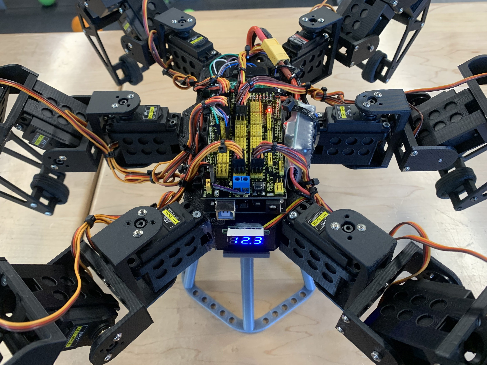
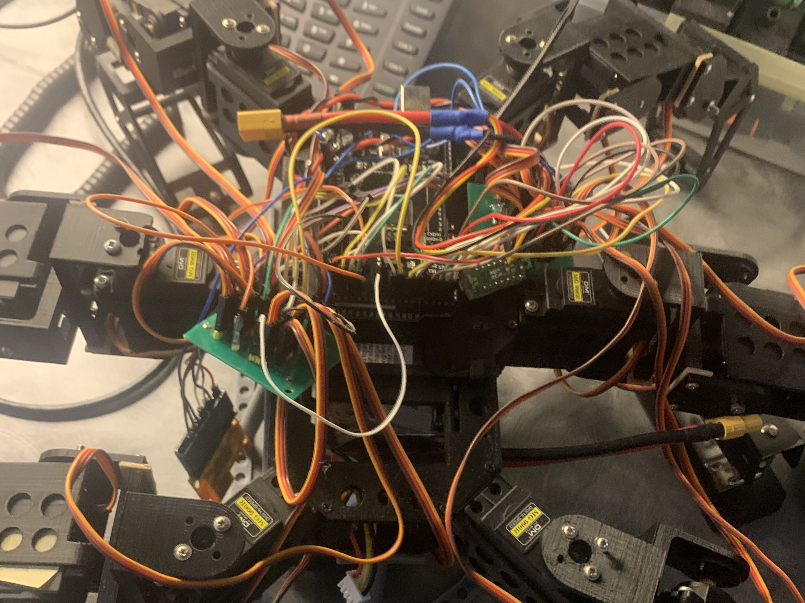
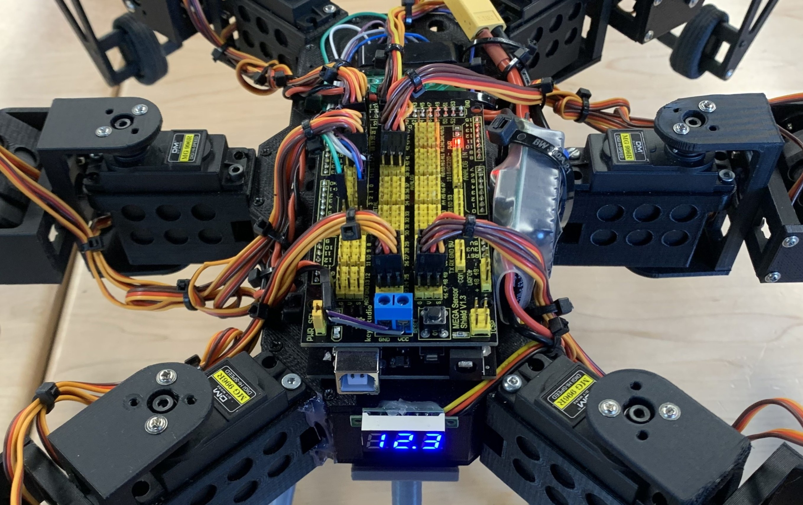
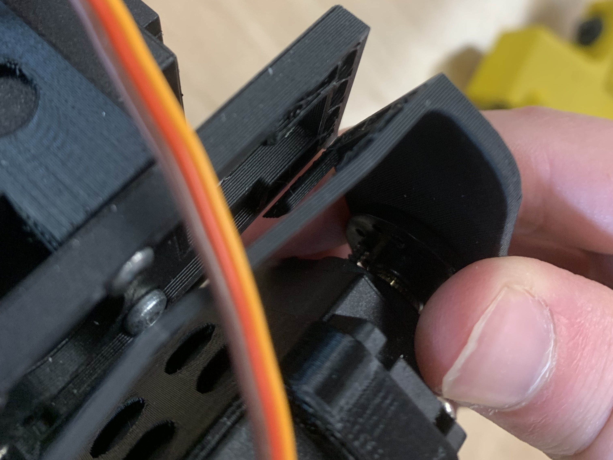
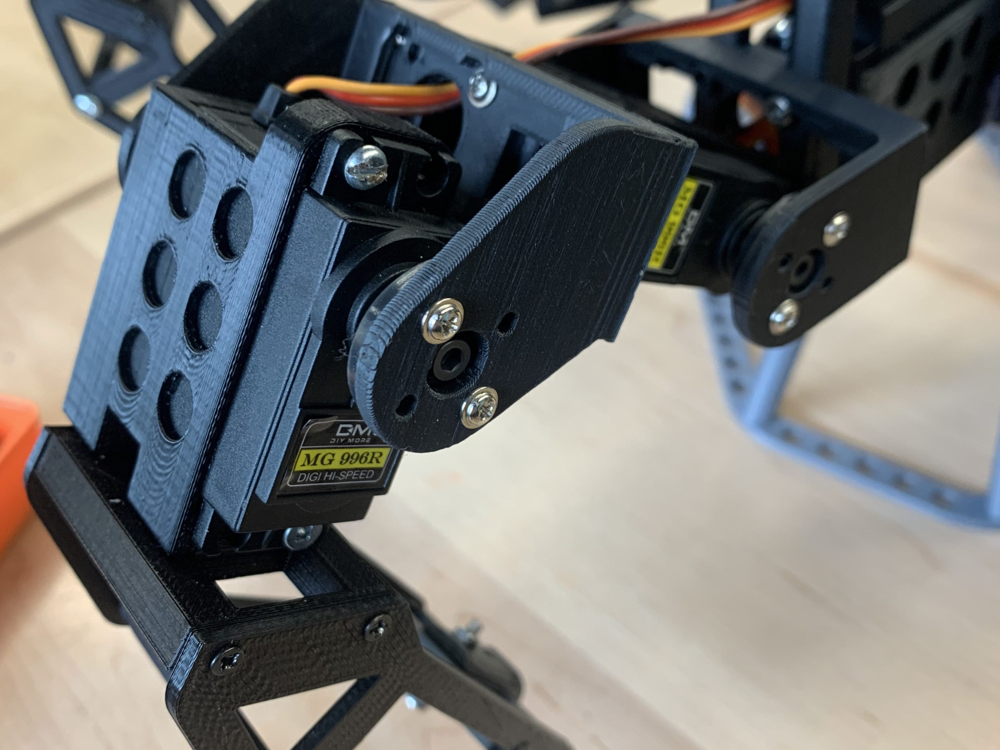

Hexapod
A six-month extension of an existing open-source hexapod build, focused on wiring cleanup, 3D printed leg redesigns, control-code changes, speed improvements, and reliability testing.

Project Overview
The hexapod stands as my largest and, in my opinion, most impressive project to date. Over a period of six months, I researched, brainstormed, designed, tested, and refined different parts of the robot. The robot was not originally designed by me: the base code and 3D models came from Mark W Tech, and the first version was printed and assembled by a student from my high school who graduated before me. My project was an extension of hers, but I made significant modifications to both the original design and the first iteration of the robot.
(Please note that the Mark W Tech website is currently unavailable.)
What I Started With

When I first received the robot, it was functional but slow, unreliable, and messy. There were loose wires, unconnected boards and sensors, poor connections, wooden spacers on the legs, mismatched screws, missing screws, and visible damage on many of the 3D printed legs. Cracks and tears in the printed parts made the robot especially prone to failure during testing.
Wiring

My first major task was reorganizing the wiring. I ordered an Arduino shield so the motors could connect directly to the main board, moved and secured components, routed the battery more cleanly, and bundled the wires with cable ties. I also modified the code so the motors could be connected more flexibly while still leaving enough wire slack for leg movement.
Redesigning The Legs


The biggest mechanical issue was that the legs frequently broke. The more I improved the speed and stabilization, the more often the brackets holding the motors snapped along the print layer lines. I spent weeks redesigning parts, changing print settings, reprinting, and testing. Because I could only produce a few parts each week, progress was slow.
Eventually I realized about half of the breaks were caused by the robot slipping and putting too much weight on certain legs. I adjusted the code and added LEGO tires to improve grip, which helped, but some failures continued. On the last day of the project, I discovered that the PLA filament I had used all year was much weaker than the original material, likely because it was expired or poor quality. That explained many of the recurring failures, but there was no time left to rebuild the parts.
Code
The code was over 1000 lines in a language I was not familiar with, so the first challenge was simply understanding how the robot worked. After many hours of reading and testing, I began to understand the main sections and how the robot translated controller input into leg movement.
I made several changes: increasing the robot's speed, changing output ports, adjusting body and leg operating heights, and adding a function to mirror commands for a replacement motor that interpreted inputs differently from the others. The speed changes made the robot more impressive, but they also exposed the mechanical weaknesses in the printed legs.
Reflection & Files
Although I was disappointed that the robot still had reliability problems, I was proud of how much I learned. The project taught me more than almost any previous build: wiring, mechanical troubleshooting, print quality, code reading, testing, and the way one improvement can reveal a new weakness somewhere else in the system.
This file is Mark W Tech's original, unmodified code. My personally edited version has been lost and is not available.
Videos
Below are videos of the robot in operation. The robot is fully controlled with a PS2 controller.